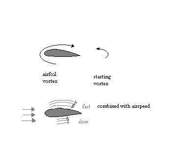
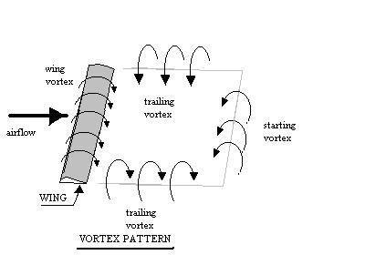

Many wonder, since air is invisible, how it can support an airplane.
Even though it is invisible, air is stuff. There are many
examples. Feel the wind and watch the wind blow snow, leaves and
trees, and the stuff that is air becomes more apparent. The terrible
distruction of hurricanes and tornadoes is tragically clear evidence
that air contains alot of stuff, stuff that can apply a great deal of
pressure, easily enough to lift an airplace.
There are many explanations of How Airplanes Fly in books, museums,
flying lesson material and other sources. Most rely on the
relation between fluid velocity and fluid pressure given many years
ago (in 1738) by Daniel Bernoulli. That relation is of fundamental
importance in aeronautics and is called Bernoulli's Theorem. Important
in an explanation of flight, Bernoulli's Theorem states that: where
the velocity is higher, the pressure is smaller; and where the velocity
is lower, the pressure is larger.
Since the velocity above the wing is higher than the
velocity below the wing, it follows directly from Bernoulli's Theorem
that airplane wings provide lift. Most explanations rely on
this relation to explain how things fly. Where many have difficulty
is in explaining why the velocity is higher above the wing then below
the wing.
For example, several Federal Agencies have presented
in flying lesson material that the velocity is higher on the top
of the wing because, for an airfoil shape, the air particles have
further to go to match up at the trailing edge with particles on the
bottom of the wing and therefore they must go faster.
It is
well established that the air particles do not match up at the trailing
edge. If they did, how could an airplane fly upside down, as
is often seen at air shows. Unfortunately, there are also a number
of other less-than-correct explanations.
Why is the velocity above the wing higher than below the wing?
To explain why the velocity is higher above the wing
than below, it may help to recollect some common observations. When
rowing a boat or paddling a canoe one often notices the swirls that
the oars or paddles make in the water. These swirls occur off the
relatively sharp edge of the oar or paddle.
When fluid flow, air or water, is around a relatively
sharp edge, or even when two different flow rates meet, swirls or
VORTICES form. It is an important natural phenomenon. Similarly
a vortex is formed by the sharp trailing edge of an airfoil. This
vortex is termed the starting vortex.
Since every action has an equal and opposite re-action,
when a vortex starts, behind an airfoil, the equal and opposite reaction
is a vortex in the opposite direction around the airfoil. Thus,
there are two velocities that affect the pressure on the airfoil: 1)
the velocity of the airfoil through the air, and 2) the vortex or circulation
around the airfoil. Above an airfoil, the velocity through the
air and the circulation are in the same direction and are additive. Below
the airfoil the circulation is subtracted from the velocity through the
air. Consequently, above the airfoil the velocity is higher and,
from Bernoulli's Theorem, the pressure is lower. Below the airfoil
there is a lower velocity and higher pressure. The pressure differential
produces lift. The lift is proportional to the velocity through
the air and the magnitude of the circulation. The circulation increases
with the angle of attack of the airfoil.

The precise mathematical relationships of lift were
worked out in the early 1900's by the German mathematician Kutta
and the Russian scientist Joukowsky. Each developed the math
independently of the other and the relationship is known as the Kutta-Joukowsky
Law. Kutta assumed that the circulation strength around the airfoil
is just sufficient to result in the flow streaming smoothly off both
the upper and lower surfaces and leaving the airfoil at the trailing
edge. Although he could not give a physical explanation, experiment
shows that his assumption accurately corresponds to reality. Some
years later, in 1918, the German physicist Prandtl gave a complete
description.
Without going into detail, theory and visual flow observations
both confirm that the starting vortex detaches from the airfoil.
The airfoil vortex is connected to the starting vortex by two
trailing vortices, one from each wing tip. Visualization of this vortex
pattern is important to pilots in avoiding vortices of other airplanes,
particularly larger ones.

Trailing vortices are usually referred to as Wake Turbulence
by pilots. They are potentially dangerous, particularly when
the wake of a larger airplane is encountered by a smaller airplane.
The vortices are usually invisible and have caused fatal accidents.
Business jets encountering the wake of an airliner have been
unable to stop rolling even with full opposite controls. To reduce
the hazard during takeoff and landing approach, air traffic controllers
increase the separation distance behind heavy airplanes.
Note: "How Airplanes Fly" briefly describes the aerodynamics
known and practiced by Aeronautical Engineers. I have a Masters
Degree and Professional Degree in Aeronautical Engineering from
the California Institute of Technology. I learned and practiced
these same principles, did research in aeronautics and helped design advanced
airplanes that flew.
References:
1) Millikan, Clark B.,
Aerodynamics
of the Airplane , Wiley, New York, 1941
2) Van Sickle, Neil D.,
Modern
Airmanship , D. Van Nostrand, Princeton, New Jersey,
1957
3) Von Kármán, Theodor,
Aerodynamics , Cornell University Press, Ithaca, N.Y.,
1955